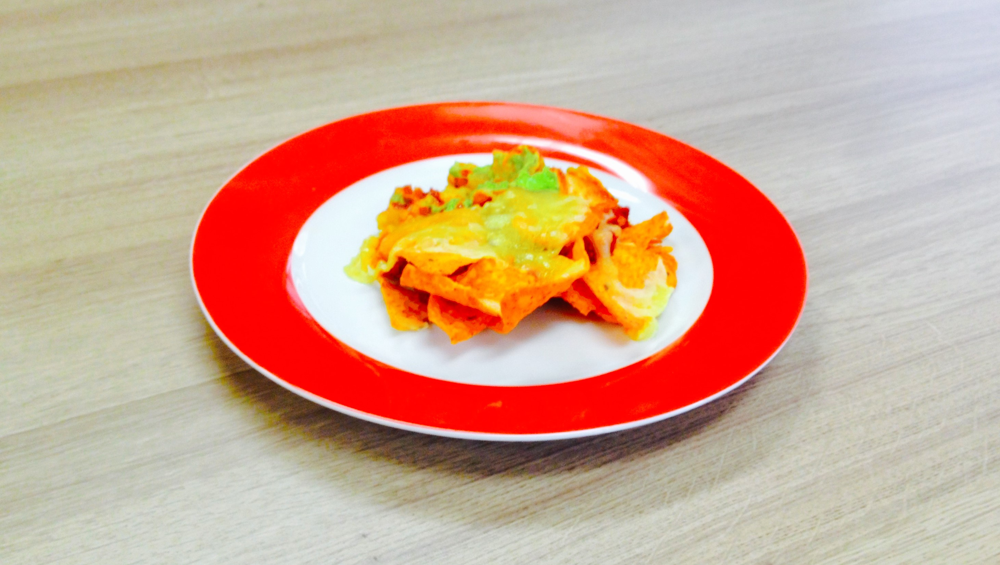

Serves: 2 people
Recommended Serving Size: 1 volcano
Skill Level: 2/5
| Nutrional Value (1 volcano) |
| Calories |
Fat (grams) |
Carbohydrates (grams) |
Protein (grams) |
| 242 |
16 |
7 |
18 |
Catering to dietary needs:
- Celiacs (Gluten Free): Normal buns can be replaced by gluten free buns
- High Cholesterol: Cook in sunflower or olive oil
- Vegetarians: Substitute lamb with tofu, paneer or goat's cheese
Ingredients
- 140 grams dark chocolate (melted)
- 3 eggs
- 1/4 cup caster sugar
- 1/4 cup plain flour
- 2 tablespoons whipped cream

Method
- Preheat oven to 200°C
- Grease baking dishes (ramekins or soufflé dishes)
- Whisk eggs and sugar together until thick and pale
- Fold in melted chocolate
- Fold in flour
- Pour into dishes
- Bake for 10 minutes (Tip: Test at 8 minutes with a skewer)
- Serve with whipped cream and/or caster sugar
- Enjoy!